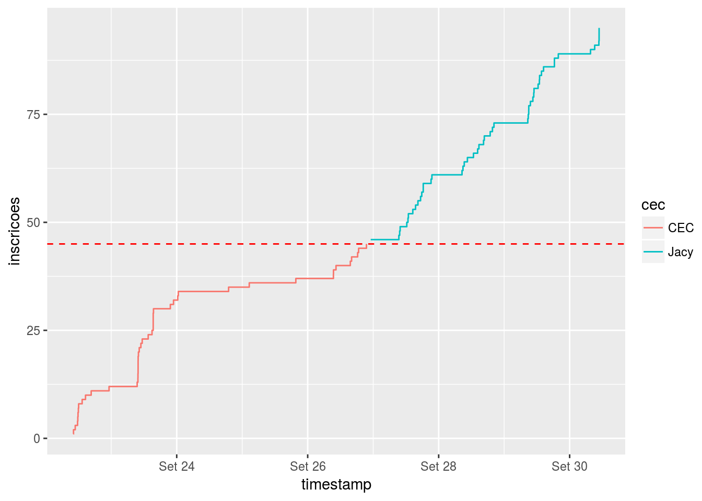
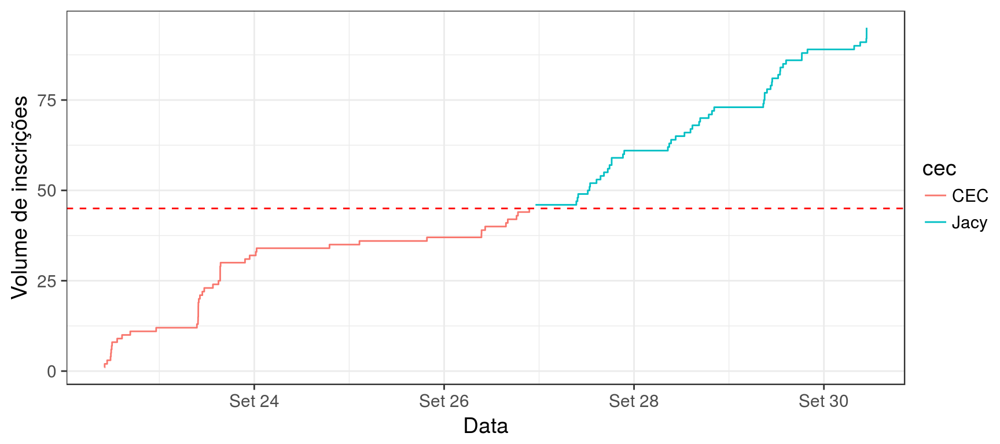
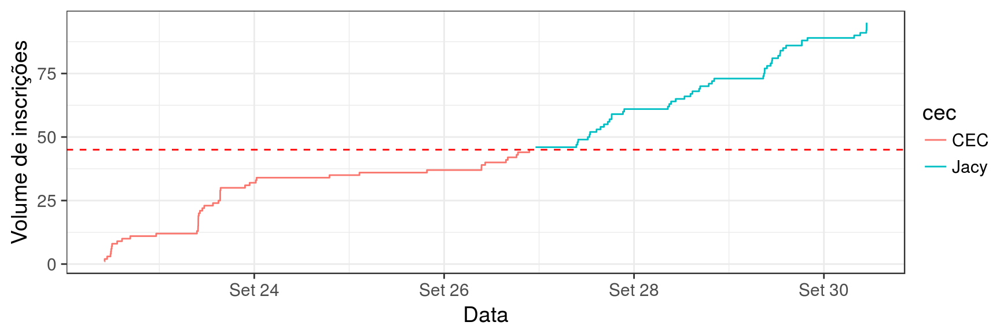

2.1 O curso
library(magrittr)
library(tidyverse)## Loading tidyverse: ggplot2
## Loading tidyverse: tibble
## Loading tidyverse: tidyr
## Loading tidyverse: readr
## Loading tidyverse: purrr
## Loading tidyverse: dplyr## Conflicts with tidy packages ----------------------------------------------## filter(): dplyr, stats
## lag(): dplyr, statslibrary(stringr)
library(lubridate)##
## Attaching package: 'lubridate'## The following object is masked from 'package:base':
##
## datelibrary(forcats)
# suppressMessages(read_csv('data/lista.csv')) %>%
# filter(!str_detect(`Nome Completo:`, 'Trecenti')) %>%
# select(-`RG:`, -`Nome Completo:`, -`E-mail:`) %>%
# write_csv('data/lista_anon.csv')
renomear <- function(d) {
x <- names(d) %>%
tolower %>%
abjutils::rm_accent() %>%
str_replace_all('[[:space:]/\\-().:]+', '_') %>%
str_trim() %>%
str_replace_all('_+', '_') %>%
str_replace_all('_$', '')
names(d) <- x
d
}
re_usp <- regex('usp|universidade de são paulo|ime', ignore_case = TRUE)
re_ufscar <- regex('ufscar|universidade de são carlos', ignore_case = TRUE)
re_ime <- regex('ime', ignore_case = TRUE)
re_unip <- regex('unip', ignore_case = TRUE)
d_alunos <- suppressMessages(read_csv('data/lista_anon.csv')) %>%
mutate(Timestamp = mdy_hms(Timestamp)) %>%
rownames_to_column('id_pessoa') %>%
mutate(cec = id_pessoa %in% as.character(1:45)) %>%
gather(pergunta, resposta, matches('^[0-9]')) %>%
renomear() %>%
spread(pergunta, resposta) %>%
mutate(uni = with(., case_when(
str_detect(universidade, re_usp) ~ 'USP',
str_detect(universidade, re_ufscar) ~ 'UFSCar',
str_detect(universidade, re_unip) ~ 'UNIP',
TRUE ~ 'Outra'
))) %>%
mutate(esc = with(., case_when(
str_detect(estou_no_a, 'raduado|formado|Mestrado|Pós') ~ 'Graduado / Pós',
str_detect(estou_no_a, 'Graduação') ~ 'Graduação',
TRUE ~ 'Outra'
))) %>%
mutate(ime = str_detect(universidade, re_ime),
cec = if_else(cec, 'CEC', 'Jacy'))d_alunos %>%
arrange(timestamp) %>%
mutate(um = 1, inscricoes = cumsum(um)) %>%
ggplot(aes(x = timestamp, y = inscricoes, colour = cec)) +
geom_step() +
geom_hline(yintercept = 45, colour = 'red', linetype = 2)
d_alunos %>%
replace_na(list(esc = 'Outra')) %>%
mutate(esc = fct_infreq(esc)) %>%
ggplot(aes(x = esc, fill = cec)) +
geom_bar(position = 'dodge') +
theme_bw(14)
d_alunos %>%
gather(questao, resposta, matches('^[13]')) %>%
replace_na(list(resposta = 'Não.')) %>%
count(cec, questao, resposta) %>%
mutate(prop = n / sum(n)) %>%
ggplot(aes(x = str_wrap(resposta, 25), fill = cec, y = prop)) +
geom_bar(position = 'dodge', stat = 'identity') +
facet_wrap(~questao, scales = 'free_x', ncol = 1) +
scale_y_continuous(labels = scales::percent) +
theme_bw(14)
d_alunos %>%
gather(questao, resposta, matches('^[2]')) %>%
replace_na(list(resposta = 'Nenhuma')) %>%
mutate(ling = str_split(resposta, '\\., ')) %>%
unnest(ling) %>%
mutate(ling = str_replace(ling, '\\.$', ''),
ling = fct_infreq(ling)) %>%
group_by(cec) %>%
mutate(ntot = n_distinct(id_pessoa)) %>%
group_by(cec, ling) %>%
summarise(n = n_distinct(id_pessoa), ntot = first(ntot)) %>%
mutate(prop = n / ntot) %>%
ungroup() %>%
mutate(ling = str_wrap(ling, 20) %>% fct_reorder(prop, .desc = TRUE)) %>%
ggplot(aes(x = ling, fill = cec, y = prop)) +
geom_bar(position = 'dodge', stat = 'identity') +
scale_y_continuous(labels = scales::percent) +
theme_bw(14)